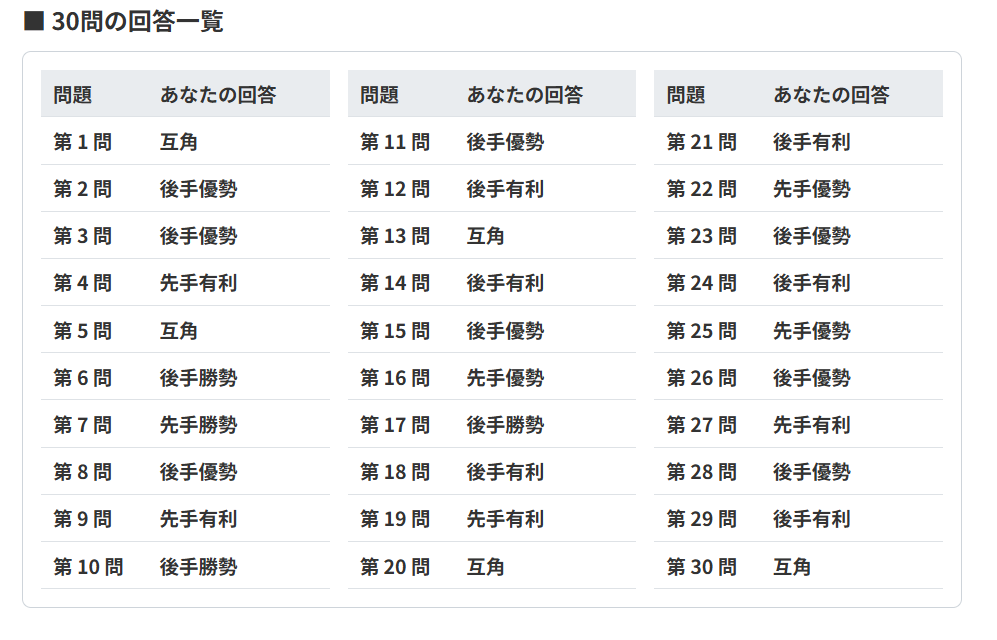

第4部 (4/4)
実験後の流れとご留意事項
📌 実験終了後の重要なお願い
- 全30問の回答が終了すると、自動的にデータ送信画面が表示されます。必ず送信ボタンを押して、回答結果をスプレッドシートへ送信してください。
- データ送信が完了したことを確認の上、表示される回答一覧画面のスクリーンショットを撮影して保存してください。
- ※ここに掲載されている画像や回答一覧などの表示はすべて見本となります。
【データ送信画面の見本】

【回答一覧画面の見本】

【実験へのご協力のお願い】
本実験にご協力いただきありがとうございます。
本実験は、将棋の局面についてアマチュア高段者と将棋AIの形勢判断の評価の傾向の違いを調査することを目的としています。
■ 実験の内容
提示される将棋の局面図をご覧いただき、それぞれの局面における形勢について、最も適切と思われるものを選択してください。また、実験前に数個のアンケートをお願いします。
■ 問題数: 30問（全4部構成 / 今回は 第4部 4/4）
本実験は全120問（30問×4部構成）となっており、今回はそのうちの「第4部」となります。（※本番前に例題があります）
■ 注意事項
CSVデータを読み込んでいます...
📌 実験終了後の重要なお願い
【データ送信画面の見本】
【回答一覧画面の見本】

※被験者別のデータを識別するため、お名前をローマ字にした際の「姓の頭2文字 ＋ 名の頭2文字」を小文字でご入力ください（例：山田太郎 ➔ yata）。
Q. 自分と同じレベルの相手と対戦した時「中盤の駒組の段階でほぼ同型（お互いの陣形がほぼ同じであり駒効率の差がない）」と仮定した場合、あなたにとって各判定（有利・優勢・勝勢）に相当する最低限の駒得はどれですか？
【参考例：歩が1枚（持駒または盤面）得している状態のイメージ】

※上記のように、盤面のみだとお互いの陣形に差が全くなく持ち駒の「歩が1枚だけ多い（得している）」といった場合の感覚を基準にお答えください。

【説明文】
上記の画像画面のように将棋のある局面が提示されます。盤面の右上にある「▲ 先手」が先手、左下にある△ 後手が後手を表します。盤面の真下に表示されているのが駒どくや指し手・手番を表しています。ラジオボタンに先手勝勢〜後手勝勢のいずれかが選択できるようになっているので、局面をみて最も近い局面を選択してください。
例題は2問ありますので、2問やっていただいた後、本実験について回答していただければと思います。
現在の形勢は？（※選択すると次へ進めます）
現在の形勢は？（※選択すると次へ進めます）
すべての問題の回答が終了しました。以下のボタンを押して、回答結果をスプレッドシートへ送信してください。
【データ送信画面の見本】
⚠️ ご注意・ご案内
| 問題 | あなたの回答 |
|---|
| 問題 | あなたの回答 |
|---|
| 問題 | あなたの回答 |
|---|